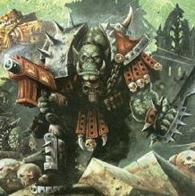

Forums galactiques > Assemblée Galactique : diplomatie officielle > Candidature pour le Gouvernement
Pages : 1 2
| Feyd-Rautha Respect diplomatique : 266  24/05 ETU 10:27 | Score : 3 Détails En raison des délais assez courts dont nous disposons, il serait bien que le dépôt des candidatures soit terminé ce soir afin de lancer une élection de 24H dans la foulée...
De mémoire, les commandants suivant sont déjà interressés par la capitale (merci de confirmer toutefois) : - Vladimir - Juju_01 Si d'autres personnes souhaitent acquérir la planète-gouvernement, merci de vous faire connaitre rapidement. Eloa n'attendra pas indéfiniment. Merci à tous de votre attention. Le dépot des candidatures aura lieu dans cette salle. | ||
| Seigneur Grimaldus Respect diplomatique : 806  24/05 ETU 12:53 | Score : 3 Détails "Moi,Seigneur Grimaldus,héraut du peuple des Seigneurs, maitre fédéré, me porte volontaire pour assurer la régence de la Capitale.
Je serais incorruptible,intransigeant avec les fous qui essayeront de l'attaquer, et jure que je ne léverais pas d'impots." | ||
| Tiz Respect diplomatique : 165  24/05 ETU 14:56  | Score : 2 Détails Moi, Tiz, bête dévouée au peuple, à la démocratie, à l'équité et à la légitimité, me présente à ces éléctions.
Pour un gouvernement libre, du peuple, par le peuple et pour le peuple. | ||
| Xemnas Respect diplomatique : 24  24/05 ETU 16:03 | Score : 1 Détails Moi, Xemnas, me propose pour assurer une galaxie libre, ou toute personne sera libre, et n'aura rien a payer aux gouvernements.
| ||
| juju_01 Respect diplomatique : 271  24/05 ETU 16:16 | Score : 3 Détails Le commandant juju_01 apparut au pupitre, contre toute attente (qui a dit non ?).
Commandantes, Commandants, Après tous mes efforts pour que la capitale me revienne, je ne peux que me présenter à ces "élections". Mon programme, qui je le voit a fait des émules -Monseigneur à tout hasard-, n'a pas changé : je souhaite acquérir la capitale pour avoir la capitale, pas d'impôts, pas de pseudo-réforme populaire, ni d'éventuelles institutions. Juste la possession de ce symbole. Ne vous attendez donc pas à de grandes actions de ma part une fois élu, vous risqueriez de vivre longtemps (car l'espoir fait vivre, tout le monde le sait). De toute facon je sais que vous voterez pour moi, étant donné que j'ai la primeur des idées évoquées ci-dessus. juju_01 interpella un commandant du fond : et toi, arrete de dire non, ou au moins justifie toi ! Mesdames, Mesdemoiselles, Messieurs, Merci de m'avoir écouté. juju_01 fit un petit bond en direction d'un fauteuil du premier rang. | ||
| Soldiers73000 Respect diplomatique : -9 24/05 ETU 16:30 | Score : -2 Détails *Un commandant assi a une table semit a parlais*
Bonjour a toutes et a tous .Je suis Soldiers73000 j'aimerais me présenter pour acquerir la planete gouvernement . *il se leva* Je pense être en mesure d'en prendre le contrôle .Et je tiens a faire mes excuse officiel a Vladimir ,mais si son ami Le fou des Ombres a des ennui il devra apprendre a les réglés tout seul . *s'assi* Alors j'espere que cette planete me reviendras . Merci a tous de votre ecoute . *parti sur une de ces planetes* | ||
| GrosFarceur Respect diplomatique : 41 24/05 ETU 16:36 | Score : 7 Détails Du haut de son petit nuage, GrosFarceur contemplait inlassablement tous les Commandants présents à l’Assemblée Galactique. Avec un sens de l’humour hors du commun, il s’amusait de temps en temps à jeter des tomates sur certains commandants, à coller des chewing-gums sur les sièges de l’assemblée, ou même à couper le micro lors des discours de certaines personnes.
Tous ces actes préparés avec le plus grand soin, avaient comme effet de préserver chez chaque commandant l’esprit du jeu. C’est en cela que GrosFarceur a toujours été et restera indispensable à cette galaxie, tout comme ses amis Gros Veinard et Gros Bisous. Un jour, lors d’un repas remplis de Bisous, de câlins et de farces, GrosFarceur eu une idée mémorable. Non content de voir l’ambiance se dégrader dans cette galaxie où la guerre passe avant les divertissements, il décida à l’aide de son armée de Bisounours de répandre le bien sur des planètes jusqu’ici isolées et encrées dans des régimes sanguinaires. Aujourd’hui, alors que les commandants se préparent à voter le nom du premier détenteur de la Capitale Galactique, un nuage d’une rare intensité fit son apparition au sein de l’Assemblée. Après avoir été avoir aveuglés quelques instants, tous purent apercevoir GrosFarceur en personne. Celui-ci, heureux d’être présent aujourd’hui, lança dans les tribunes une sorte de poudre qui, en l’espace de quelques minutes, fit rendre à tous la bonne humeur et la joie de vivre. Après avoir attendu quelques instants, que certains finissent les farces qu’ils venaient d’entamer, GrosFarceur prit la parole : « Commandantes et Commandants, Je me suis déplacé ici en personne aujourd’hui afin de vous proposer à tous mon aide. Comme nous avons pu le constater dès à présent, la galaxie est en ce moment même en péril. Chacun doit prendre conscience ici, qu’il existe en ce moment un manque cruel d’humour et surtout d’amour dans ce monde. Puisque la majorité des Commandants souhaitent voir apparaître très rapidement un gouvernement, et que la Capitale Galactique sera bientôt rendu par Eloa, moi, GrosFarceur ai donc l’honneur de vous annoncer ma candidature afin d’établir au plus vite un gouvernement capable d’enrayer la guerre et les bains de sang, au profit de l’amour, principe indispensable, pour une galaxie soudée et fraternelle. Ce programme doit pouvoir être mis en place si chacun d’entre vous se sentent concernés par le futur proche de notre galaxie. C’est pour cela que les Bisounours s’engagent à tenir ce programme afin que tous commandants aient une place prépondérante dans les décisions de la galaxie. » Après ces derniers mots, un petit nuage blanc entra dans l’assemblée afin de venir récupérer GrosFarceur. Celui-ci devait maintenant repartir avec son peuple afin de propager l’amour et l’humour dans toute la galaxie. | ||
| Gros Bisous Respect diplomatique : 214  24/05 ETU 16:36 | Score : 4 Détails C’est avec joie que la confédération Bisounoursienne se présente a vous comme candidat, Vive Gros Farceur, que l’amour qu’il vous portera vous emplisse de Bonheur, vive lui , Hourra !
Il était une fois, 3 petits rois.. Rois de joie, Rois de coeur.. Il était une fois 3 petit rois.. Et 3 royaume tout en couleur.. La haut perché sur leur nuage.. Vivaient ces trois personnages.. Et sous un arc en ciel, la ville.. Mais qui donc étaient ils ?.. Aussi agile que le plus habile voleur.. Vilain blagueur que ce GrosFarceur.. Qui de sa joie et sa bonne humeur Va vous faire rire de tout son coeur.. Malin gredin et sacré peinard.. Ce Gros Veinard est un vrai roublard.. De la chance, il en a matin et soir.. Et du bonheur il en offre sans pourboire.. Et enfin voila le plus câlin et le plus chou.. Gros Bisous, les bisous il en est fou.. Coeur triste et grosse peine gare a vous.. Car des bisous, il vous en fera partout! Il était une fois 3 petits rois.. Roi pourquoi ? Et bien ma foi.. Il était une fois 3 petits rois Voila.. ^^ | ||
| Seigneur Grimaldus Respect diplomatique : 806 24/05 ETU 16:40 | Score : 4 Détails "Si je puis me permettre..Nous cherchons un régent..Pas un gouvernement.
Aussi je crois que certains surestiment les pouvoirs que le régent possèdera.." | ||
| GrosFarceur Respect diplomatique : 41 24/05 ETU 16:49 | Score : 8 Détails Après ces derniers mots, GrosFarceur revint dans L’Assemblée afin d’expliquer au mieux sa position actuelle.
« Navré de vous interrompre Seigneur Grimaldus, mais sur ce point là je ne suis pas d’accord avec vous. Je vous signale que des élections mettront plusieurs jours à se mettre en place (si un gouvernement doit être élu). En ce temps de régence, je pense donc qu’il est du devoir du régent de faire régner la paix et la prospérité au sein même de la galaxie. Dans mon discours, vous remarquerez que je ne suis pas allé plus loin que cela, j’ai simplement expliqué que si les Bisounours avaient la charge de la Capitale Galactique pendant ce temps, ils s’obstineront à faire régner l’amour et la fraternité entre tous les commandants. » GrosFarceur, décida ensuite de partir s’asseoir près de ces deux confrères. | ||
| Gips Respect diplomatique : 17  24/05 ETU 16:53 | Score : 0 Détails Bonjour;
je me propose moi aussi pour possedé la Capitale... Longue vie à la liberté,longue vie à la paix | ||
| Feyd-Rautha Respect diplomatique : 266 24/05 ETU 16:54 | Score : 2 Détails J'aimerai bien voir ça que les élections mettent plusieurs jours à se mettre en place... Vous ne connaissez pas encore Feyd-Rautha, mais dès que ce sera fait, vous comprendrez. Efficacité avant tout.
On ne plaisante pas avec l'humour Messieurs. | ||
| GrosFarceur Respect diplomatique : 41 24/05 ETU 17:08 | Score : 6 Détails « Cher commandant, ce n’est pas que je ne crois pas en votre exceptionnel talent, mais il faut au moins plus d’une semaine pour que tous les commandants se mettent d’accord et vote les modalités d’un futur gouvernement (comment fonctionnerait le vote, quels seraient les pouvoirs de ces nouvelles institutions, pour combien de temps serait-elles élues etc…).
Une fois tout cela fait, il restera encore plus d’une semaine de votes pour élire le gouvernement (selon toujours le mode de scrutin). Donc vous voyez bien que mes « quelques jours » que j’ai exprimé dans mon précédent message sont bien justifiés.» | ||
| Xemnas Respect diplomatique : 24 24/05 ETU 17:14 | Score : 2 Détails J'ai l'impression que ces elections sont tres prometteuses.
*HELP! je vois des bisounours partout... En plus, je vois triple, deja que j'en supportait pas un, alors la 3...* *Xemnas s'evanouit* [HRP] zinkietez pas, j'ai rien contre les bisounours, du moins pas pour le moment^^* | ||
| Feyd-Rautha Respect diplomatique : 266 24/05 ETU 17:14 | Score : 2 Détails Cette salle n'est pas là pour désigner un gouvernement, ni un chef de galaxie Monsieur Farceur. Cette salle est la pour des candidatures pour effectuer un vote pour désigner qui sera celui qui prendra en main la capitale le temps de mettre en place des institutions.
C'est donc vous qui n'avez pas compris. Il ne faut pas 15 jours pour recenser des candidatures et voter. Demain soir ce sera fait. Merci de ne poster QUE des candidatures et des programmes ici. Les délais sont courts, ne discutaillons pas pour des bagatelles ! | ||
| Gros Bisous Respect diplomatique : 214 24/05 ETU 17:20 | Score : 4 Détails Gros bisous sent de la tension dans l'air, Gros Bisous veut l'amour et la paix.
Gros Bisous vous envoie plein de bisous Feyd-Rautha, que le bonheur lisse votre vie de belles choses ^^. Un vrai gouvernement n'est pas facile a mettre en place, et il faut du temps, beaucoup de temps, il est en effet plus rapide d'élire un possesseur provisoire de la capitale afin qu'il s'en occupe au mieux de ses capacité. L'amour saura maintenir la paix en attendant que la sagesse ne mette en place une paix plus durable au moyen d'institutions solides. C'est en cela que gros Farceur voulait exprimé le fait qu'il est long d'organiser une telle structuration, et qui puis est dans un univers si vaste. Aller je vous fait un spécial BBBB Feyd-Rautha. ^^ | ||
| Oxis Respect diplomatique : 14  24/05 ETU 17:22 | Score : 0 Détails Moi Oxis me propose pour la capitale et m'engage à garder la justice dans la galaxie !
| ||
| revan Respect diplomatique : 25  24/05 ETU 17:32 | Score : 1 Détails Hum , à ce que je vois , il faudrait plutot demander QUI ne veut pas entrer en possession de la capitale.
Car là c'est bien partit pour que tout le monde se propose. Cela ne m'interesse pas, je ne suis pas tres politique, j'ai des diplomates et des vaisseaux , si les uns de font pas l'affaire les autres s'en chargent. Revan | ||
| Gros Veinard Respect diplomatique : 316  24/05 ETU 18:23 | Score : 3 Détails Tiens, mes comperes sont déjà arrivés, me presente,GrosVeinard le Roublard, futur Ministre de la guerre et de la Sainte Trinité mere des Bisounours et militante pour le droit au bisous volants et calinous dans le vent , comment ça y a pas de prétention de créer ce post!
GrosVeinard qui venait de voir son pellage vert passé au blond platine via la poussiere de l'arc en ciel juste au dessus de lui continua l'air intrépide Bon, ou en étions nous, à oui, ça y est cela me revient, les Bisounours et moi même nous nous présentons au Gouvernement mais ça je pense que GrosFarceur vous l'a déjà expliqué et pour une fois, ce n'est point une farce, fois de vieux roublard Allez, j'ai les vaches a traitre, je vous laisse avec tout plein de bisous partout et votez partout si vous voulez des calinous GrosVeinard, se retourna, pris sa canne et pis s'en va | ||
| Le fou des Ombres Respect diplomatique : 204 24/05 ETU 18:27 | Score : 6 Détails On entend un rire hystérique, de plus en plus fort.
‘SHPOK’ Un homme vient de tomber d’on ne sais où comme une larve tomberait d’une feuille. Il se relève, se gratte la tête et dévisage l’assemblée. « Bah quoi !! Vous n’êtes jamais tombé ? Tss. » Il s’étire, c’est un grand homme au visage rayonnant de folie, vêtu d’une tenue noire. « Hum, comment ??? Ce mollusque de Soldiers73000 raconte des histoires intimes ici même, dans cette assemblée ? » Il fronce les sourcils, se courbe en avant et observe ses chaussures cirées. « Hum, peut être cherche t’il lui aussi de l’aide pour une situation qu’il a lui-même déclenchée… Hey bah, du coup, moi aussi mes chers amis, je viens ici crier au loup !! *Il tend son bras vers un côté, laissant son doigt tomber sur Soldiers73000, quelques gouttes de sueurs perlent sur le front du fou, il rougi. Soudain la balle éclate, et il s’écrie :* RHAAAA il m’a menacé de mort si je ne le lui envoyais pas des ressources quotidiennement ce machin !!! Il espère que je ne dise rien et que je me laisse manger par ses sucs gastriques ?? Soldiers, vous êtes fou !! Et je suis né pour résister aux folies les plus dures !! Vous ne m’aurez pas. Et si j’avais mes œufs, vous ne seriez qu’un lardon galactique en quête de graisse végétale !! Hum, mes œufs, c’est une autre histoire.. * Il soupire un instant, exténué.* Bien, au fait, je me présente : Serbmo, simple voyageur en quête de savoir. J’ai été mage, oui !! Je l’ai été ! Peut être que j’ouvrirais une taverne, si bien sûr les mollusques ne me prennent pas mes biens. Pour vous servir, Ombres et péchés. Au fait, je crains que cette planète dont vous parlez attire certains fous des plus dangereux !! J’ai cru voir des Bisounours… *Haussant un sourcil* Ca se mange, ça ? *Il fait une révérence digne d’un aristocrate du moyen âge. Avant de s’en aller en riant, un rire de fou.* |
Pages : 1 2
Forums galactiques > Assemblée Galactique : diplomatie officielle > Candidature pour le Gouvernement